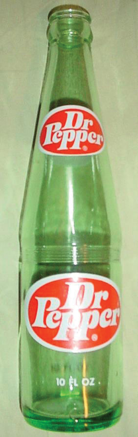

Figure 9.6 Dr. Pepper Bottle
Imagine that you are in an antique store and find a nineteenth-century ledger book for sale, originally from the W. B. Morrison & Co. Old Corner Drug Store in Waco, Texas. Among the recipes for hair restorers and cough syrups, something in particular catches your eye—a recipe entitled D Peppers Pepsin Bitters. What if you also knew that Dr. Pepper was first created and served in that very drugstore? What if you offered to pay two hundred dollars for the old ledger book, even though if it did contain the recipe for Dr. Pepper, it would be worth far more? After all, according to the company that manufactures Dr. Pepper, only three people know the recipe to that very closely guarded trade secret. Something very similar to this happened to Bill Waters. He found the ledger book in an antique store, and he paid two hundred dollars for it. However, at the time, he did not know that the book might date back to the exact time and place from which the popular soda was created. In fact, he did not even notice the recipe until later, and it took him several more days to recognize the possibility that it might be an early version of Dr. Pepper.
Unlike patents, a trade secretAnything of value a company takes reasonable steps to protect from disclosure. can last forever. That is, it can last forever if the owner of the secret can, well, keep it a secret. If someone uses lawful means to uncover the secret, then the secret is no longer protected by the secret’s owners. Does this include reverse engineering? Yes. Reverse engineering is an absolutely legal means of discovering a trade secret. What about ferreting out secrets from an employer’s safekeeping, while employed and under a binding confidentiality agreement? No. That is an actionable claim for misappropriation, and the secret’s owners can pursue damages.
Trade secrets are unlike patents in another important way. With a patent, the inventor must specifically disclose the details of the invention when applying for a patent. This means that the inventor has not protected the secret of the invention. However, in exchange for this disclosure, a patent owner has a legal monopoly over the property for a specified period of time. So even if others discover the secret of the invention (not a difficult task since patent applications are public record), they are prohibited from making, using, or selling it without the patentee’s permission. After the patent expires, then the patentee no longer has a property right to exclude others.
So what is a trade secret? It is, in short, secret information. This information may include a process, formula, pattern, program, device, method, technique, or compilation. For many companies, lists of suppliers, costs, margins, and customers are all trade secrets. Soft drink recipes, KFC’s eleven spices, the donut mix sent to Krispy Kreme franchisees, the Big Mac’s special sauce, and even the combination of wood that is used in the burning process to make Budweiser beer are all trade secrets. Additionally, the information derives actual or potential economic value from being a secret that is not readily discoverable by others, and the information is the subject of efforts to keep it a secret. While most states have adopted the Uniform Trade Secrets Act (UTSA)A model law to protect trade secrets, adopted by over forty states., not all have, so the definition of trade secret can vary by jurisdiction. Unlike patents, trademarks, and copyrights, there is no federal law protecting trade secrets.
A claim for misappropriationAppropriating wrongly or without justification. may be brought when a trade secret has been wrongfully obtained, such as through corporate espionage or bribery. Generally, according to the UTSA, misappropriation occurs if the secret was acquired by improper means, or if the secret was disclosed or used without permission from the secret’s owner. Damages may include actual loss and unjust enrichment not captured by actual loss. Additionally, in cases of willful or malicious misappropriation, double damages may be awarded, as well as attorney’s fees.
So what if you are never lucky enough to discover a multimillion-dollar secret recipe hidden away in an antique shop? As long as the recipe is not patented, you can try to reverse engineer it. If you succeed, you can use it immediately. However, if you are working for an employer in a creative capacity, working with others to develop the secret, and if you have agreed not to use trade secrets, then the right to the trade secret will belong to your employer, at least in most jurisdictions. Ask Peter Taborsky, an undergraduate student at South Florida University in 1988. According to Taborsky, while working in the university’s chemical engineering lab, he began conducting experiments on his own. He discovered a highly effective method for treating sewage. The university demanded that he hand over his notebooks that contained the secrets of this invention. Taborsky refused and filed for a patent for his invention, which he received. However, the university pressed criminal charges for stealing trade secrets. Taborsky lost his case and found himself in a maximum-security facility working on a chain gang.
So does Bill Waters need to worry about Dr. Pepper’s owners suing him for misappropriation or pressing criminal charges for stealing trade secrets? No. He lawfully obtained the ledger book by purchasing it in the open market. Additionally, according to a company spokesman, the ingredient list under D Peppers Pepsin Bitters is most likely an old remedy for a stomachache rather than any version of the recipe for Dr. Pepper. Even if Mr. Waters had accidentally stumbled on the exact Dr. Pepper recipe, he would have a good argument that the company did not take steps to keep the secret a secret. If it had, he could argue, the company never would have allowed the recipe out of its sight.
Trade secrets last forever if the owner of the secret keeps the secret. However, if someone else discovers the secret through a lawful method, then the owner of the secret has no right to exclude others from using the secret. Unlawfully obtaining a trade secret is called misappropriation, which is an actionable claim. The Uniform Trade Secret Act has been adopted by most (but not all) states, so different jurisdictions have different rules of law concerning trade secrets.